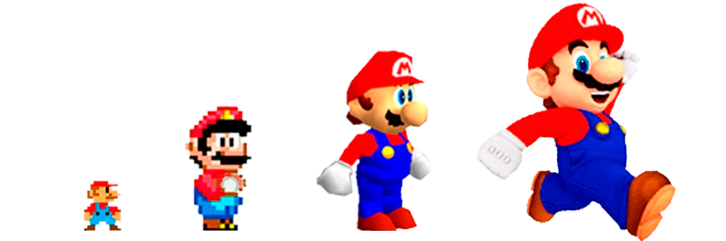
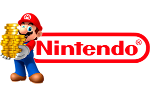

Jumpman?
Em 1980, após uma tentativa sem sucesso da Nintendo ao fazer um jogo baseado no desenho Popeye, Miyamoto, considerado o pai do Mario, foi então solicitado pela empresa para projetar um novo jogo baseado em suas próprias ideias. O resultado disso foi Donkey Kong, em que o personagem "Jumpman" (Mario) tentava salvar a sua namorada Pauline do gorila Donkey Kong.
E porque o nome Mario?
Nos Estados Unidos, as pessoas perceberam que o personagem era extremamente parecido com um funcionário da Nintendo, chamado Mario Segali, daí veio a ideia de trocar o nome de Jumpman para Mario, que já começou a ser utilizado no próximo jogo de Miyamoto, Donkey Kong Jr.
Evolução do designer do Mario
Super Mario World
Super Mario World, lançado em 1990, é um dos mais famosos jogos do Mario, considerado por muitos como o melhor ou um dos melhores de todos o tempos.
Considerado pelo GameRanking, site que reúne diversas reviews, como o 17º Jogo com Melhor Avaliação de Todos os Tempos. O jogo conta com a participação de Yoshi, diversos power-ups e muitas fases e trilhas sonoras marcantes e nostálgicas.
Super Mario World foi produzido durante uma guerra de consoles, resultado da rivalidade entre o SNES da Nintendo e o sistema Mega Drive da Sega, levando a uma competição intensa entre os dois; foi a primeira vez desde dezembro de 1985 que a Nintendo não liderava o mercado, embora tenha eventualmente ultrapassado a Sega. Lançado em 21 de novembro de 1990 no Japão e na América do Norte em agosto de 1991. A Nintendo também lançou uma versão para máquinas de arcade para que os jogadores pudessem experimentar o jogo antes de comprá-lo. No Brasil, seu lançamento aconteceu no ano de 1993, juntamente com o lançamento do SNES no país.
Então é isso! Espero que você tenha gostado desse modelinho de site e de tudo que foi feito nele.